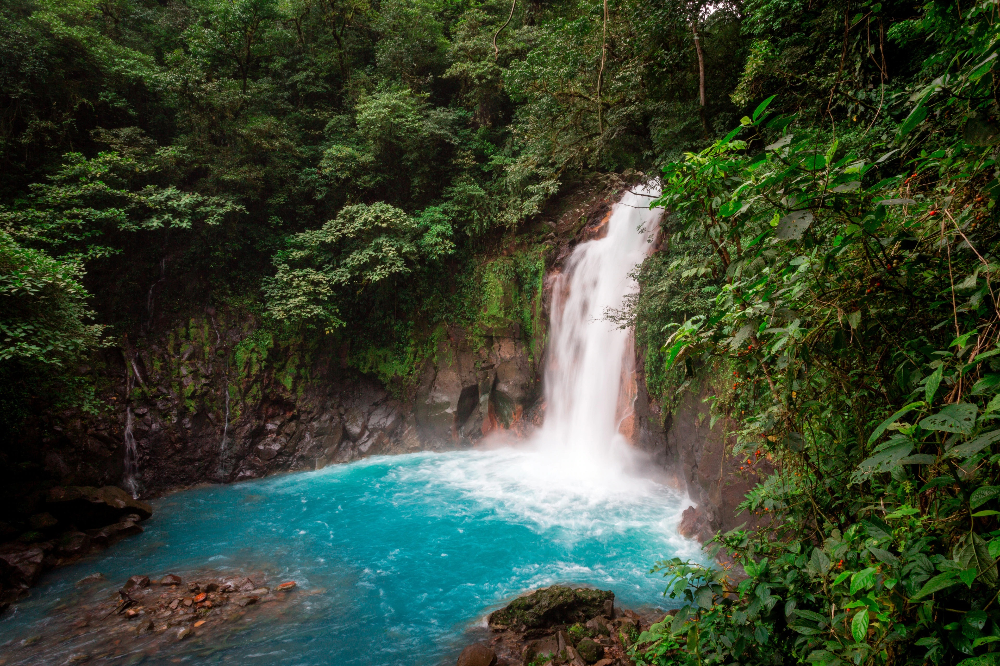

Skip to Main Content
Travel
- Costa Rica

- 
- costa_ricagif.gif
- costarica.jpeg
- Geographical Location: Central America
- Costa Rica is located in Central America, and is one of the most luscious and mountainous lands in that area. It is close to the equator so the only real seasons it gets is dry and hot, and rainy and hot. There are multiple active volcanoes as well like the Arenal Volcano. There are also some of the most stunning and clear beaches in the world where locals flock to on the weekends to relax
- There are unlimited activites in Costa Rica, and ecotourism is the one of the leading industries in the country. There is ziplining through the rainforest, surfing big waves, snorkeling to see the wildlife, ATV riding through the trees, mountain biking, hiking. Costa Rica is known for its laid back lifestyle and positivity.
- Photo Gallery
- costarica_sunset.jpg
- A sunset in costa rica overlooking the ocean from the beach.
- A beach sunset in Costa Rica
- las_catalinas.jpg
- Overlooking the beach town of Las Catalinas from a hiking spot in Costa Rica.
- Las Catalinas view.
- volcano_horse.jpg
- An active volcano in La Fortuna, Costa Rica called Arenal where tourists can ride horses up to see it.
- Active Volcano in Costa Rica
- SanJose_costarica.jpg
- View of the Capital city of Costa Rica, San Jose, where there is lots of history and economic activity.
- San Jose
- monkey_costarica.jpg
- These white faced Capuchin monkeys love to hang out all throughout Costa Rica, in the trees and on the ground.
- Costa Rica Monkeys
- Rachel Sonnett
- Rome


- romegif.gif
- rome.jpeg
- Geographical Location: Europe
- Rome is one of the most historic, and the most well preserved city in the world. It has architecture dating over 2000 years. It is the capital city of Italy, and was the center of the Ancient Roman Empire. Ancient buildings like the Coloseum, Trevi Fountain, the Pantheon, and the Vatican still stand today and attract millions of tourists from around the world.
- Apart from its vast history, Rome has immense culture, with its amazing fashion and shopping opportunities. Rome is known for its leather goods, like shoes, belts, purses, and more. The food is also world renowned, like the gelato, wine, pizza, and pasta.
- Photo Gallery
- ancient_rome.jpg
- Ancient Rome which is situated in the city, below ground level with ruins over 2000 years old.
- Ancient Rome
- rome_food.jpg
- Some of Rome's best street food is pizza. You can find some on many street corners as you're walking through the city.
- Street Pizza in Rome
- trevi_fountain.jpg
- The Trevi Fountain is in the heart of the city, designed by Italian architect Nicola Salvi and completed by Giuseppe Pannini in 1762.
- Trevi Fountain
- shopping_rome.jpg
- There is a shopping opportunity on almost every street in Rome, varying from designer goods, to mainstream stores, to handmade leather products.
- Shopping in Rome
- colosseum_rome.jpg
- The Colosseum is one of the most famous landmarks in Rome, and is the largest ancient ampitheater in the world.
- The Colosseum
- Rachel Sonnett
- Tokyo


- tokyo_gif.gif
- tokyo.jpg
- Geographical Location: Asia
- Tokyo is the capital city of Japan, and is one of the most famous metropolitan cities in the world. It is more futuristic, clean, and organized than most cities, but also still carries Japan's rich culture throughout. It also is a large hub for pop culture and fashion, along with finance.
- Shibuya crossing is one of the most famous pedestrian crossings, with its advanced technology and screens surrounding. Tekeshita Street is known as the hub of Jarajuku, which is youthful subculture and fashion of Japan. The Asakusa district has an inconic Japanese temple, called Senso-ji that is a must see.
- Photo Gallery
- shibuya_crossing.jpg
- famous pedestrian crossing, with hundreds of people crossing at one time surrounded by technology.
- Shibuya Crossing
- tokyo_temple.jpg
- One of Japan's most famous temples, senso ji. It is a buddhist temple and is the oldest temple in Tokyo.
- Senso Ji Temple
- takeshita_tokyo.jpg
- Takeshita street is hub for Harushuku fashion, food, and culture. It is very popular for toursts and teenagers.
- Takeshita Street
- tokyo_food.jpg
- You can't go to Japan without trying their sushi. Japan's fish industry is world renowned and has probably the freshest sushi in the world.
- Sushi
- tokyo_train.jpg
- Tokyo is known for its clean, efficient, and organized transportation system that gets basically the whole city to where it needs to be.
- Tokyo's Public Transportation
- Rachel Sonnett